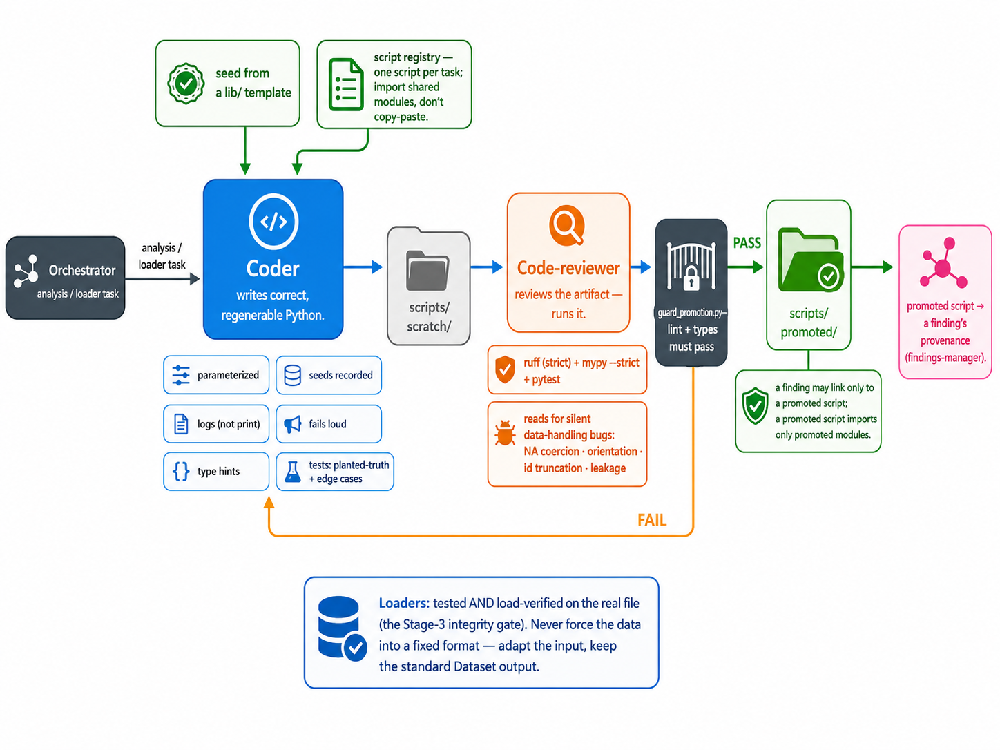

Analysis code
The coding agent
Correct, regenerable Python, seeded from lib/ templates — reviewed by running it, and gated on lint + types before a script can back a finding.

Correct, regenerable Python, seeded from lib/ templates — reviewed by running it, and gated on lint + types before a script can back a finding.
